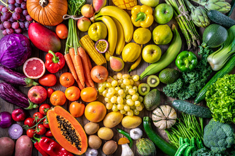

Sobre la Verduleria
"Bienvenido a nuestra verdulería, un pequeño oasis en medio de la ciudad donde puedes encontrar productos frescos, saludables y deliciosos. Nuestra historia comenzó hace más de 20 años, cuando dos amigos decidieron dejar sus trabajos en una gran cadena de supermercados para abrir su propia verdulería en el barrio de Santa María. Su visión era simple pero poderosa: ofrecer a los clientes productos frescos, de alta calidad y provenientes de agricultores locales de confianza."
"Desde entonces, nuestra verdulería se ha convertido en un lugar de encuentro para la comunidad, donde los vecinos vienen a charlar, comprar y aprender sobre alimentos saludables. Nuestro equipo está compuesto por apasionados por la comida saludable, quienes se aseguran de que cada producto sea cuidadosamente seleccionado y tratado con el mayor cuidado."
"Además de nuestra selección de frutas y verduras frescas, ofrecemos una amplia gama de productos, desde panes recién horneados y frutos secos hasta aceites y vinagres artesanales. También ofrecemos servicios adicionales, como entregas a domicilio y asesoramiento nutricional personalizado."
"En nuestra verdulería, estamos comprometidos con la sostenibilidad y la responsabilidad social. Trabajamos con agricultores locales que comparten nuestros valores y apoyamos a organizaciones que promueven la alimentación saludable y la educación."
"Gracias por visitar nuestra página y esperamos verte pronto en nuestra verdulería, donde siempre te recibirás con una sonrisa y una cálida bienvenida."
Para conocer nuestros productos haga click Aquí
